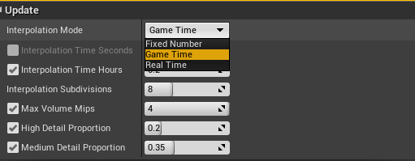

Progressing Time
Progressing time in trueSKY had been made to be as easy as possible. On the trueSKY Actor there is a section called Time - and these are all you will need to progress time for trueSKY.
To get time moving quickly, simply increase the Progression Scale to 60. 60 mean every real second trueSKY will progress by 1 minute. If you wanted real time you could set it to 1, but you’re unlikely to see much change unless you’ve adjusted a few values.
Examples
We also have Time Units. This is usually for projects already using a specific scale for their timings. The Scale represents how to divide a day when calculating time. Set to 1, a day is defined as the values between 0 and 1 (so 0.5 would be midday). If set to 24 (Default Value), then a day is split up from 0-24.
trueSKY supports yearly cycles, so day 2 would be represented as 24-48, day 3 = 48-72 etc. (if you had the scale as 24).
Examples
This can give you precise values that are easy to understand, and can be configured to work with any previous system. The Progression Scale above will work the same regardless of the Units of Time you are using, so a progression value of 1 is always real time.
Unreal
The trueSKY plugin for Unreal Engine allows time progression to be set directly through the progression scale setting within the truesky actor. Setting this value will control the speed at which time progresses. When using the default time unit, whose setting is found within the Times advanced settings, which controls the units used to measure time and is by default set to a 24 hour system, you can set the progression scale to 1 which will allow for time to progress in real-time (such that 1 second in the engine is 1 second in real life) and setting it to 3600 will make 1 hour in-game progress for each second passing.
To calculate a specific amount of time for a full day to progress, we can just multiply the number of minutes in a 24 hour cycle by 60 (representing the number of seconds within each minute).
For example, if aiming for a full 24 hour period to take 5 minutes in-game, multiply 5 by 60 giving a value of 300, which if used as the progression scale, will cause the 24 hour period to take 5 minutes.
trueSKY Time and Blueprints
Just like most actors, you can now get the time variable directly and adjust it however you see fit. Just use Set/Get Time from a trueSKYSequenceActor to adjust anything you need.
Using trueSKY with the Cinematic Sequencer
Using Unreal’s Cinematic Sequencer is easy, as we have made most of our variables interpolatable (You can add a keyframe to the sequence). You can’t adjust the cloud settings, but you can adjust the time - and all the clouds settings are automatically interpolated between using our own Sky Sequencer. So all you need to do is setup the scene in trueSKY’s Sky Sequencer, e.g. have the cloudiness at 11:00 be 0.9 and then another cloud keyframe at 14:00 with a cloudiness of 0. Then, using Unreal’s Sequencer, you can adjust your cinematic to adjust between these two times, and trueSKY will automatically adjust the cloud settings between the time intervals.
TrueSKY supports three different modes of update - Game Time, Fixed Time and Real Time.
The number of Subdivisions controls how finely the interpolation is performed. It is the number of intermediate steps between keyframes (for Fixed Intervals), or in the Game Time or Real Time period specified.
Update Modes
There are different ways in which we allow you to interpolate, each with it’s own advantages and disadvantages
Game Time
In Game-Time, it takes a specified amount of time in game hours, and split that into a given amount of intervals. The weather won’t change if game time does not. This is helpful go the weather does continue when paused, or can go slower based on the speed of the game.
Fixed Time
Fixed Intervals mode is similar to Game time, only there’s a specified number of interpolated intervals between any two keyframes. You can use this mode to create more detailed transitions around sunrise/sunset for example.
Real Time
If you’re using real-time transition, you can adjust the Interval (in seconds) to determine how quickly the change takes place.